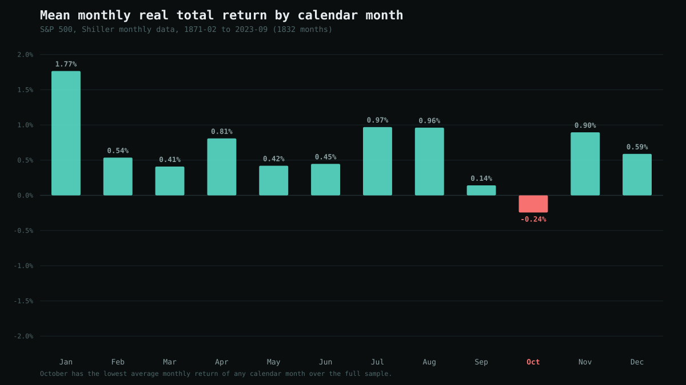
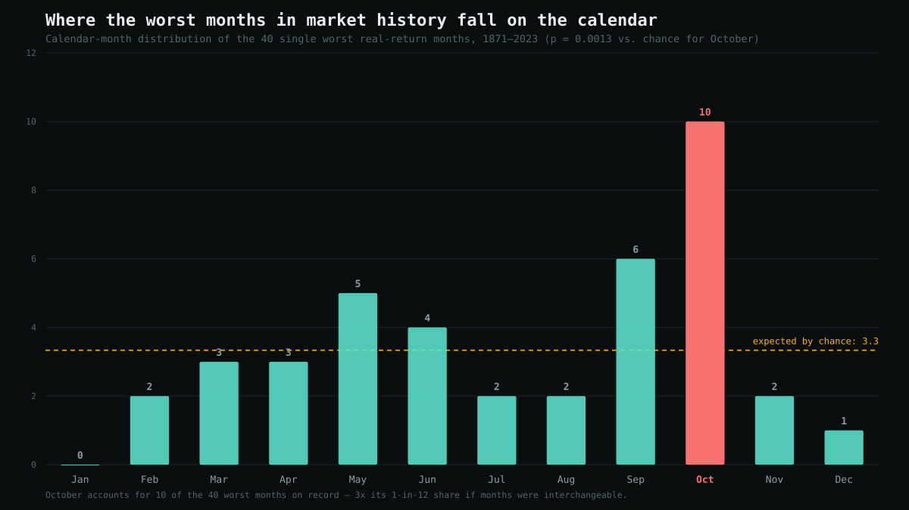

Is October Really the Market's Most Dangerous Month? A 152-Year Test
Call it the October effect: the folk belief that October is the stock market's most dangerous month, propped up by three of history's most famous crashes — 1929, 1987, and 2008 — all landing in it. It resurfaces every year right on schedule, and this year was no exception: a data-driven piece arguing October is "the stock market's most volatile month" ran across dozens of local news outlets in late September 2026, days before the month started, citing roughly 95 years of history.
It's also one of the cleaner claims in market folklore to actually check. Calendar months are a fixed, pre-defined grouping — no cherry-picking a window after the fact — and 150+ years of free return data exists to test it against. So I did, three different ways: average return, volatility, and how often the worst months in history cluster there. Each gives a different, more interesting answer than a flat yes or no.
Short version: October has the lowest average return of any calendar month over 152 years, but that result barely survives the scrutiny of testing all 12 months at once. It is not the most volatile month in the full historical record — that's August, driven by a Depression-era whipsaw — though October edges into a close second once you restrict to the modern era most people actually mean when they say "October crashes." Where the reputation is earned outright, and by a wide margin: October accounts for 10 of the 40 worst single months in market history, three times its fair 1-in-12 share, which is about as statistically solid as a finding like this gets.
Methodology
Same source as the rest of this blog's backtests: Robert Shiller's monthly S&P 500 dataset (price, dividends, CPI), mirrored as CSV by datasets/s-and-p-500 on GitHub. The mirror's trailing CPI and dividend fields stop being populated after September 2023 (nominal prices continue further, but without CPI or dividends to pair with them), so the usable sample is February 1871 through September 2023 — 1,832 monthly return observations, 152 years.
Each month's return is computed as a real (inflation-adjusted), dividend-reinvested total return: (thisMonthRealPrice + thisMonthRealDividend/12) / lastMonthRealPrice − 1, where dividing the trailing annual dividend rate by 12 is the standard convention for approximating a monthly cash dividend from Shiller's series. I then grouped all 1,832 months by calendar month (152–153 observations per month) and looked at three separate questions.
1. The average-return case: real, but it barely holds up
October's mean monthly return across the full sample is −0.24%, against an overall average of +0.64% — the lowest of all 12 months. Its median is also the lowest, though still positive at +0.12%, which is itself informative: a negative mean sitting next to a positive median means October's average is being dragged down by a handful of extreme outlier months, not by a typically-bad October.
| Month | N | Mean | Median | Stdev | Worst | % Negative |
|---|---|---|---|---|---|---|
| Jan | 152 | 1.77% | 1.89% | 3.03% | −7.10% | 30.3% |
| Feb | 153 | 0.54% | 0.70% | 3.59% | −9.88% | 44.4% |
| Mar | 153 | 0.41% | 0.62% | 3.45% | −18.74% | 39.9% |
| Apr | 153 | 0.81% | 1.05% | 4.01% | −22.70% | 35.3% |
| May | 153 | 0.42% | 0.59% | 4.53% | −13.34% | 41.2% |
| Jun | 153 | 0.45% | 0.74% | 3.78% | −11.79% | 41.2% |
| Jul | 153 | 0.97% | 0.98% | 3.79% | −12.06% | 35.3% |
| Aug | 153 | 0.96% | 0.88% | 5.60% | −10.65% | 39.2% |
| Sep | 153 | 0.14% | 0.55% | 4.22% | −15.26% | 43.1% |
| Oct | 152 | −0.24% | 0.12% | 4.50% | −19.38% | 48.7% |
| Nov | 152 | 0.90% | 1.29% | 4.31% | −26.19% | 36.2% |
| Dec | 152 | 0.59% | 1.29% | 3.44% | −17.55% | 36.8% |
Real, dividend-reinvested monthly total return by calendar month, Feb 1871–Sep 2023. Stdev is the standard deviation of that month's return across all years sampled — the volatility measure used throughout this post.

A plain Welch's t-test of October against every other month pooled gives t = −2.55 (p ≈ 0.011) — on its own, that looks like a clean result. But it isn't a fair test: we didn't pick October in advance and then check it. We implicitly checked all 12 months and are reporting the one that came out worst, which is exactly the setup a naive p-value doesn't account for. To correct for that, I ran a permutation test: shuffle the calendar-month labels across all 1,832 observations 20,000 times, and each time record how negative the single worst of the resulting 12 fake "months" is. If October's real mean is more extreme than that purely-by-chance distribution 97% of the time, that's a fair test of "is the worst of 12 months this bad more often than chance would produce." The answer: an empirical p-value of 0.0295 — still statistically significant at the conventional 5% threshold, but only about a third as strong as the naive test suggested, and nowhere near overwhelming.
2. The volatility case: depends which century you mean
This is where the circulating "most volatile month" claim runs into trouble. Over the full 152-year sample, October's standard deviation (4.50%) isn't even the highest — August is (5.60%), with May a close second (4.53%), putting October third. August's number is almost entirely a pre-1950 artifact: the summer of 1932 saw the fastest bear-market-bottom rally in Dow history whipsaw violently within weeks, and several other Depression-era Augusts were similarly wild. Restrict the August and October numbers to the post-1950 era — the market structure most people are actually picturing when they think of 1987 and 2008 — and the picture flips:
| Month | Stdev, full sample (1871–2023) | Stdev, post-1950 (n=73–74) |
|---|---|---|
| Aug | 5.60% | 3.73% |
| May | 4.53% | 3.52% |
| Oct | 4.50% | 3.85% |
| Nov | 4.31% | 3.87% |
| Sep | 4.22% | 3.75% |
| Mar | 3.45% | 3.83% |
Only the six months closest to the top of either ranking are shown. Full table available on request.
Post-1950, October's volatility (3.85%) ranks second of all 12 months, essentially tied with November (3.87%) and well clear of everything below it. So the popular framing isn't baseless — it's just quietly leaning on the modern era to make its case, while the "95 years of data" or "152 years of data" framings that get attached to it imply a longer, more settled pattern than actually holds across the full record.
3. The crash-concentration case: this is where it's earned
The strongest, cleanest result in this whole exercise isn't about the average October or the typical October — it's about where market history's worst months actually fall. Of the 40 single worst real-return months in the 152-year sample, 10 happened in October: 1902, 1907, 1929, 1930, 1931, 1932, 1933, 1937, 1987, and 2008. Ten distinct episodes spanning more than a century, not two or three famous events doing all the work.

If the 40 worst months in history were scattered evenly across the calendar, each month would average 3.3 of them (40 ÷ 12). October got 10 — three times its expected share. Because October is the specific, pre-existing hypothesis actually in circulation (unlike the "which single month looks worst" question above, nobody is out there arguing "May is the dangerous month"), a straightforward binomial test applies without the multiple-comparisons penalty: the probability of October landing 10 or more of the worst 40 months by pure chance is p = 0.0013. Even the softer version — 6 of the worst 20 months — comes in at p = 0.0047. Both are well past the usual bar for "this isn't noise."
One correction worth making to the popular telling: 1929 is remembered as an October crash, and the month was genuinely brutal (−10.3%), but the single worst month in the entire 152-year sample is actually November 1929 (−26.2%) — the panic that started in late October kept accelerating into the following month. October gets the historical credit; November did more of the damage that particular year.
So does October deserve its reputation?
Three tests, three different verdicts, and conflating them is most of what makes this claim slippery in financial media. October is the worst month on average, but only barely once you test fairly. It is not the most volatile month across the full historical record, though it's close to that in the modern era specifically. And it is, by a wide and statistically solid margin, the month where market history's genuine crashes have clustered.
Put differently: the "October effect" is really a statement about tail risk, not about the typical month. A typical October is unremarkable — its median return is positive, and it finishes negative less than half the time (48.7%), not much worse than most other months. But when the market has actually broken down hard, the base rates say it has disproportionately happened to be October when it did.
Bottom line
- Average return: October's −0.24% mean is the lowest of any month, and survives a fair (permutation-corrected) significance test at p ≈ 0.03 — real, but modest.
- Volatility: October is not the most volatile month in the full 152-year record (August is); it's a close second in the post-1950 era specifically, which is most of why the "most volatile" framing persists.
- Crash concentration: this is the real finding. October holds 10 of the 40 worst months in market history, three times its fair share, at p = 0.0013 — spanning 1902 through 2008, not just two famous flukes.
- None of this is a reason to do anything differently in any specific October. It's a description of where the tail of the historical distribution sits, not a trading signal.